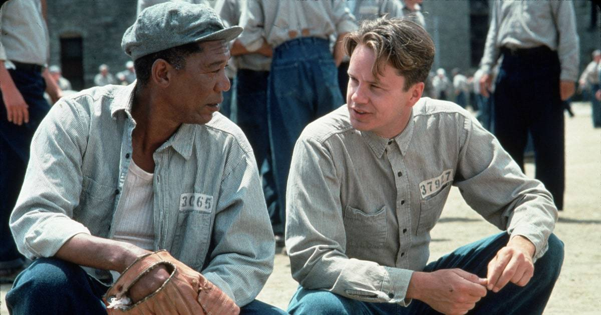
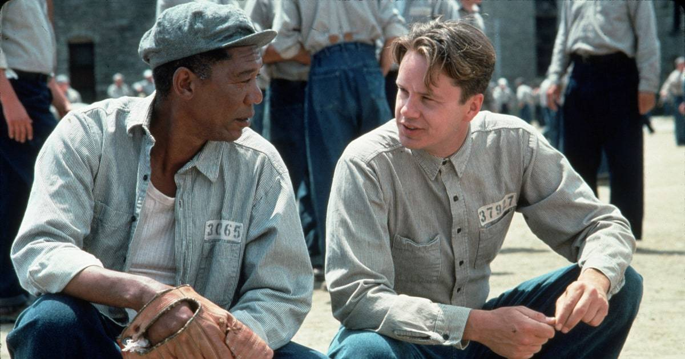

Мой любимый фильм
"Побег из шоушенка"
Картина получила семь номинаций на премию премию «Оскар» в 1995 году году: «Лучший фильм» (Ники Марвин), «Лучшая мужская роль» (Фримен), «Лучший адаптированный сценарий»
Сюжет
1947 год. В суде штата Мэн слушается дело вице-президента крупного банка Энди Дюфрейна (Тим Роббинс), который обвиняется в убийстве жены и её любовника. Дюфрейн не признаёт своей вины, но не может вспомнить, что делал в ночь убийства, так как был пьян. Незадолго до убийства Дюфрейн со скандалом уличил жену в связи с другим мужчиной, но на просьбу жены о разводе ответил отказом. В тот же вечер жена ушла из дома, намереваясь встретиться с любовником, а Дюфрейн, зайдя в бар и употребив изрядное количество алкоголя, отправился к дому, в который поехала его жена, но там никого не оказалось, и он решил дождаться парочку на месте; с собой у него был револьвер. Через какое-то время он протрезвел и, выбросив пистолет в реку, уехал домой, а утром служанка нашла в этом доме тела его супруги и её любовника; они были застрелены из пистолета. Пистолет, который Дюфрейн выбросил в реку, найти не удалось (если бы он был найден, можно было бы определить, что любовники были застрелены не из него); другие косвенные улики также указывают на виновность обвиняемого.
Суд приговаривает Дюфрейна виновным в предумышленном убийстве двоих человек и приговаривает его к двум пожизненным заключениям. Бывший вице-президент банка попадает в Шоушенк — одну из самых мрачных тюрем Новой Англии, в которой свирепствуют жестокость и беззаконие. Начальник тюрьмы Сэмюэл Нортон (Боб Гантон) демонстрирует показную религиозность, а начальник охраны Байрон Хедли (Клэнси Браун) в первую же ночь после прибытия Дюфрейна в тюрьму забивает насмерть одного из прибывших вместе с ним заключённых. Одна из традиций тюрьмы заключается в издевательских выкриках новеньким после отбоя вместе со ставками на то, кто первый «сломается». Несмотря на внешнюю хрупкость, Энди оказывается сильным духом человеком, и это отмечает один из заключённых — Эллис Бойд Реддинг по прозвищу «Ред» (Морган Фримен).
 
